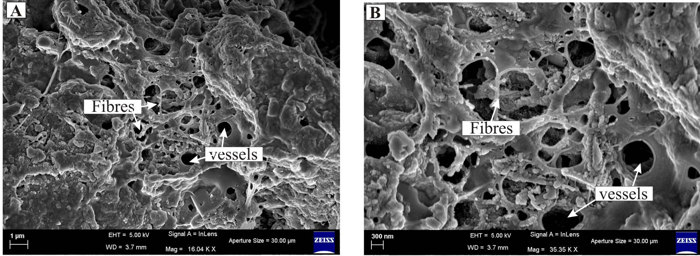
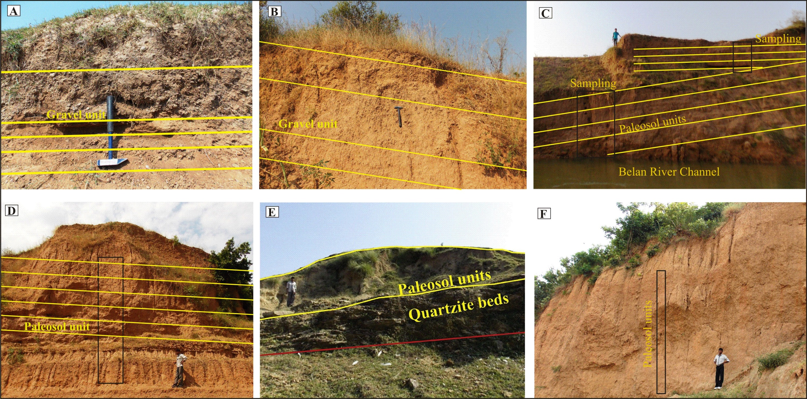
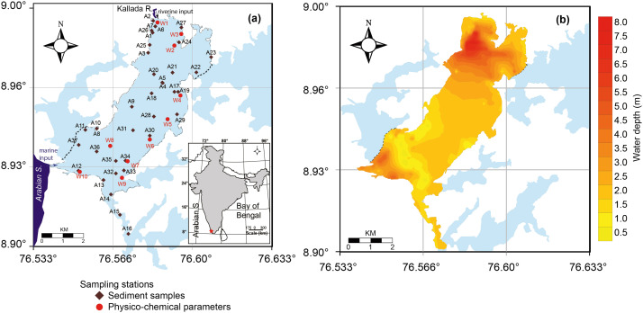

Controlled use of fire in the Indian Middle Palaeolithic
Jha, Samrat & Sanyal (2021) · Palaeogeography, Palaeoclimatology, Palaeoecology

Combining macro-charcoal counts and polycyclic aromatic hydrocarbon (PAH) diagnostic ratios from Belan Valley archaeological strata to establish early human fire management.
Read the paper
Reconstructing C3 forest vs. C4 tropical grass transitions in North-Central India using compound-specific stable carbon isotope analysis of plant wax n-alkanes.
Read the paper
Evaluating organic matter sources, terrestrial leaf-wax chain lengths, and hydrological changes during the Middle-to-Late Holocene in Southwest India.
Read the paperCoverage of our published research in the national and international press.
Jha, Samrat & Sanyal (2021) · Palaeogeography, Palaeoclimatology, Palaeoecology
Huber, Hammann, Loeben, Jha et al. (2023) · Scientific Reports
Dhiman et al. (2023) · PLOS ONE